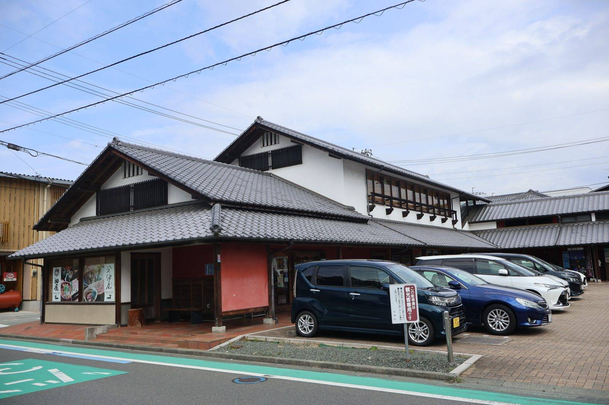

大洲の視点 ・ 出典: 大洲市ホームページ（地域振興課）

「地域おこし協力隊」という制度名は聞いたことがあっても、大洲市で実際に何人が、何をしているのかを正直、僕自身よく分かっていなかった。
認知度を裏付ける調査があるわけではないが、活動報告資料が市のホームページの奥のＰＤＦとして置かれているだけ、という構造を見る限り、自分から探しに行かないとたどり着けない情報になっているのは確かだと思う。
地域おこし協力隊は、総務省が2009年に始めた制度。都市部から人口減少地域に住民票を移し、その地域に生活の拠点を置いた人を、自治体が「隊員」として委嘱する。
任期は概ね１年以上３年以下（令和８年度からは最大５年とする特例も）で、その間、地域おこしの支援や農林水産業への従事、住民の生活支援といった「地域協力活動」を行いながら、任期後もその地域に定住・定着することを目指す。
隊員の活動費は、国の特別交付税による財政措置の対象になっていて、自治体側の持ち出しを抑えながら受け入れられる仕組みになっている。
大洲市でも継続的に隊員を受け入れていて、令和７年度の活動報告会では、令和７年10月の回で「退任する隊員１名・新たに着任した隊員３名」、令和８年３月の回で「活動中の隊員２名」が発表を行っている。
入れ替わりを繰り返しながら、常に複数名が大洲のどこかで活動している状態が続いているということだ。
大洲市地域おこし協力隊のページを見ると、2026年８月時点で現在８名が活動中と分かる。
内訳は新規就農・６次産業化２名、林業関連２名、地域活性化２名、大洲イノベーションセンターの利活用１名、教育（部活動の地域移行）１名。
最新の着任は2026年６月だった。分野が農業・林業から教育・観光まで幅広く、市が抱える課題の縮図のような顔ぶれになっている。
（先に触れた活動報告会の「活動中の隊員２名」は、その回で発表した人数であって、在籍する隊員全員の数ではないようだ。）
過去の退任者にも実績があった。ページには退任した６名が紹介されていて、その中には任期終了後に農家民宿を開業した元隊員や、地域のまちづくり推進に関わり続けている元隊員もいる。
移住系メディアのインタビュー記事でも、Uターンで大洲に移り、観光と地元をつなぐ「中間地点」的な役割を担った隊員の話が紹介されていた。
任期を終えたあとも大洲に根を張った例が、少なくとも何件かは確認できる。
では全国ではどうなのか。総務省が令和８年４月24日に公表した調査に、はっきりした数字があった。
直近５年間（令和２～６年度）に任期を終えた隊員は8,762人。 そのうち70.3％にあたる6,163人が、同じ地域に定住していた。
内訳は、活動していた市町村にそのまま残った人が57.5％、近隣の市町村へ移った人が12.8％。 他の地域へ転出したのは23.0％だった。
さらに、定住した5,038人の進路を見ると、約46％が起業、約35％が就業、約12％が就農・就林。 任期後に残る人の半数近くが、自分で仕事を作っている計算になる。
協力隊で名前の挙がる岡山県真庭市も、2026年３月末までに任期を終えた隊員の定住率は71.4％。 全国平均とほぼ同じ水準だ。
「先進地」と聞くと突出した数字を想像するが、実際には全国平均そのものが７割前後で、そこが基準線になっている。
総務省は「地域おこし協力隊等 起業・事業化支援アワード」という表彰制度も設けて、隊員やＯＢ・ＯＧの起業を後押ししている。
大洲市の実績がこうした先進地に比べてどうなのかまでは今回確認できなかったが、少なくとも「協力隊をきっかけに地域に定着する」という道筋自体は、全国的に珍しいものではないようだ。
改めてページを確認していて気づいたことがある。ページのタイトルには「（終了）」の文字が添えられていて、最後の更新は令和８年３月27日。
つまり令和７年度の活動報告会シリーズは、この記事を書いている時点ですでに終わっていたということだ。
年度替わりのタイミングで報告会という「場」自体が一区切りつき、次の年度の活動がどう報告されるのかは、次の更新を待つ必要がありそうだ。
報告会では、隊員一人ひとりが自分の活動をまとめた発表資料（ＰＤＦ）が公開されている。
この手の活動報告資料は、隊員自身がスライドを何十枚も作り込んで臨むことが多いと聞く。
それだけの労力をかけて作られた資料でも、市のホームページの奥のページにＰＤＦとして置かれているだけでは、日常的にそのページへたどり着く市民はほとんどいないというのが実情だと思う。
１年～３年という任期の中で、地域に飛び込み、手探りで活動を形にしていく。
そのこと自体が簡単ではないはずなのに、報告の場が市民との接点になりきれていないとしたら、少しもったいない。
日々の活動はInstagram等でも発信されているそうなので、興味を持った人はそちらも覗いてみると、報告資料だけでは伝わらない活動の様子が見えてくるかもしれない。
行政の枠組みの中で頑張っている人の存在を、市民の目に触れる形にする。
派手な仕事ではないけれど、こういう「拾い上げ」も、このサイトの役割の一つだと思っている。